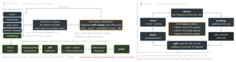
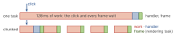

runtime · folio
In one line: One thread runs JS to completion. The browser takes one task from a
queue of its choosing, runs it, then drains every microtask; painting is a task of its
own, queued at each rendering opportunity. Node walks libuv’s phases and, after
every callback, drains process.nextTick, then microtasks. Nothing runs between two
microtasks — an endless chain of them freezes everything.
Download PDF Print view LaTeX source


What runs when
| API | queue | browser | Node |
|---|---|---|---|
process.nextTick | tick queue | — | before microtasks; Legacy since 22.7 / 20.18 |
then, await, queueMicrotask | microtask | all | V8’s queue; global since 11 |
MutationObserver | microtask, 1 per batch | all | — |
setTimeout, setInterval | task: timer | ≥0 ms; 4 ms when nested >5 | ≥1 ms; timers phase |
setImmediate | task | not a web API | check phase |
MessageChannel | task: posted message | no clamp | global since 15 |
| network, input, files | task | own sources | poll phase |
requestAnimation- Frame | rendering task | before style + layout | — |
requestIdle- Callback | idle period | Chrome 47, Firefox 55; Safari: flag only | — |
scheduler.postTask / .yield() | prioritized task | Chrome 94 / 129, Firefox 142; no Safari | timers/promises: yield() = setImmediate (exp.) |
The processing model (HTML, ECMA-262)
- ECMA-262 leaves scheduling to the host: a job runs only on an empty stack, one at a time, to completion; promise jobs in the order queued. HTML: promise job = microtask.
- One queue per task source; the browser picks which goes next — order holds within a source, not across them (a timer vs a message).
- Microtask checkpoint after every task and every callback that leaves the stack empty: between two listeners of a real click, after each rAF and observer callback. It drains until empty —
function f(){queueMicrotask(f)}freezes the page; asetTimeoutloop does not. - MutationObserver queues one microtask per batch: 1000 DOM edits in a task → one callback, 1000 records; observers called in creation order.
- Rendering is a task on the rendering task source (HTML PR #10007, Jan 2024; before, a step of the loop), skipped when nothing visible changed and no rAF is pending. Reading
offsetWidthorgetBoundingClientRect()after a style write forces style + layout inside your task.
Timers
- HTML: timeout <0 → 0; a timer set from a timer task nested more than 5 deep: <4 ms → 4 ms. Earlier timers with an equal or shorter timeout fire first; the browser may wait longer (power, throttling).
- The IDL type is
long(signed 32-bit): 231 ms (≈24.8 days) or more wraps and fires at once. Node: >2147483647, <1 or NaN → 1 ms, fractions truncated; Node promises neither exact timing nor ordering. - Chrome, hidden page: timers checked once per second; from Chrome 88, hidden >5 min + chain ≥5 + silent 30 s + no WebRTC → once per minute.
Trace it
console.log('A');
setTimeout(() => console.log('B'), 0); // task
Promise.resolve().then(() => { console.log('C'); // micro [C]
queueMicrotask(() => console.log('D')); }); // [F, D]
(async () => { console.log('E'); // runs now
await null; console.log('F'); })(); // [C, F]
globalThis.process?.nextTick(() => console.log('G')); // Node
console.log('H');- Browser: A E H C F D B — D was queued during the drain, still before B.
- Node, CommonJS: A E H G C F D B — the tick queue drains first.
- Node, ES module: A E H C F D G B — the module body already runs inside the microtask drain, so G waits for it to empty.
const b = document.querySelector('button');
for (const n of [1, 2]) b.addEventListener('click', () => {
queueMicrotask(() => console.log('m' + n)); console.log('L' + n); });
b.click(); // L1 L2 m1 m2 -- this script is still on the stack
// a real user click: L1 m1 L2 m2Node specifics
- Since Node 11 (PR #22842) ticks + microtasks drain after each timer and immediate callback, “to better match browser behaviour” — before, once per list.
setImmediateruns its whole queue each iteration; one queued from inside an immediate waits for the next — recursivesetImmediatelets I/O in, recursivenextTickor microtasks starve it.setTimeout(f, 0)vssetImmediatein the main module: either order (has 1 ms passed?). Inside an I/O callback: immediate first — check follows poll.nextTick: before promises in CommonJS, after them in ES modules; Legacy since v22.7.0 / v20.18.0 —queueMicrotaskorders the same in both.
setImmediate(() => { console.log('i1');
Promise.resolve().then(() => console.log('p'));
process.nextTick(() => console.log('n')); });
setImmediate(() => console.log('i2'));
// Node >= 11: i1 n p i2 (Node <= 10: i1 i2 n p)
fs.readFile(file, () => { setTimeout(() => console.log('t'), 0);
setImmediate(() => console.log('i')); }); // always: i tLong tasks and yielding
- Long task: a task + its microtask checkpoint >50 ms (so input waits <50 ms, inside RAIL’s 100 ms); LoAF (Chrome 123) adds rendering + per-script attribution. INP = input delay + processing + presentation of clicks, taps, keys; p75 ≤200 ms good, >500 ms poor; Core Web Vital since 12 Mar 2024.
awaitdoes not yield — its continuation is a microtask in the same checkpoint. To let input and paint in, end the task.

scheduler.yield(): the continuation keeps the task’s priority and signal and runs ahead of same-priority tasks.scheduler.postTask(fn, {priority, delay, signal}):user-blocking·user-visible(default) ·background(WICG draft).setTimeout(r, 0): everywhere, back of the queue, clamped once nested.MessageChannelis unclamped: React’s scheduler uses it in browsers (“because of the 4ms setTimeout clamping”),setImmediatein Node, and yields every 5 ms. Unchunkable work: a Worker /worker_threads(own loop).
const yieldToLoop = () => globalThis.scheduler?.yield ? scheduler.yield()
: new Promise((r) => setTimeout(r, 0)); // Safari: no scheduler yet
let t = performance.now(); // inside an async function
for (const it of items) { work(it); if (performance.now() - t < 5) continue;
await yieldToLoop(); t = performance.now(); }React Native
- New Architecture (default since 0.76, Oct 2024): an HTML-modelled loop on the JS
thread (RFC 0744) — a task, all microtasks, then update the rendering (mount new Fabric commits). Layout effects run before the mount:
useLayoutEffectmeasures and repositions in the same frame. - A long JS task delays touches and JS-driven animation;
Animated’s native driver runs on the UI thread — “the JS thread can be blocked without affecting the animation” — fortransform,opacity, not layout props.
Traps
- “
setTimeout(0)runs next” — every microtask (Node: tick) first, then a 1 ms floor or 4 ms clamp. el.click()/dispatchEventfrom script: listeners run synchronously, microtasks only after the calling script.- Hidden tab: rAF stops, timers throttle — no heartbeats or game clocks on them.